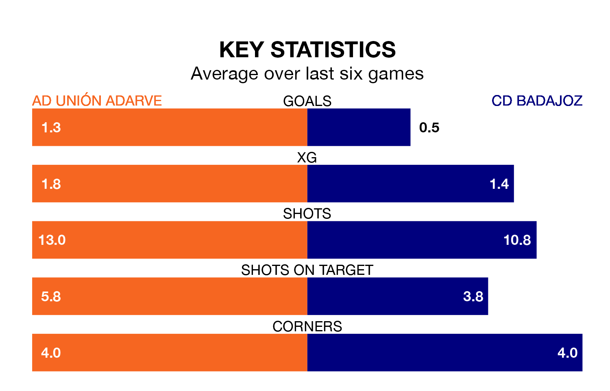

CD Badajoz travel looking to secure a first win in seven Segunda División RFEF Group 5 games against AD Unión Adarve on Sunday.
Badajoz have lost two and drawn four matches since they last earned three points – against CP Cacereño on November 12.
They face an Unión Adarve side who have won one and drawn three over that time.
With 23 goals in 17 games so far this season, Unión Adarve are scoring more than average in the league with 1.4 goals per game. But they are conceding more than average too, letting in 26 goals at a rate of 1.5 per game.
Badajoz, meanwhile, are below average scorers, with 1.0 goal per game, compared to a league average of 1.1. They have conceded 1.1 goals per game.
The visitors are 14th in the table after 17 games, of which they have won four and drawn seven, earning 19 points.
The home team are three places ahead of Badajoz in 11th, with five wins and eight draws putting them on 23 points.
Unión Adarve's last match was on January 7, a 4-0 loss against SS Reyes.
Badajoz lost 2-1 against Llerenense last time out, also on Sunday.
Updated: 10:50, 10/01/24